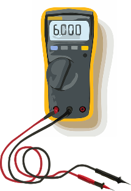

 No, it doesn't deal with the weather. Metrology is actually the scientific study of measurement. The subfield I'm involved in is the applied metrology, dealing with measurement devices, things like calipers, micrometers, digital multi-meters, mass sets, scales, really too many to list. There is too much to really talk about here, but I'll try to give a quick rundown of generalities.
Well, generally anything that can be measured is impacted by the field. Length, volume, mass, electrical current and voltage, torque, diameter, depth, again too many to list and keep you interested (heh).
There is a hierarchy in play with measurements around the world, traceability is paramount to ensure accurate and reliable measurements. National Institute of Standards and Technology (NIST) traceable measurements are required to ensure certification to various industry standards, and to provide a customer/business partner with accurate test equipment while being able to prove it!
A simple example: You go to the doctor, and they always want to get your weight. They throw you on their scale, and jot some number down, and off you go to the exam room. Whats the significance of this? If you're going to be given health care and advice based on your weight, it better be pretty accurate right? In the medical field instruments, such as the scale, need to be calibrated regularly, that is, to verify the readings the scale indicates across its range are accurate!
Lets keep talking about weight. Weight is just mass X local gravity. Standard gravity is 9.80665 m/s2, this is an "average" value at Earth's surface. This varies with elevation, and location (depends on how dense the Earth below you is). For example, the lowest local gravity is on Mount Nevado Huascarán, located in Peru. There the local gravity is 9.7639m/s2. While the highest is at the surface of the Arctic Ocean with a local gravity of 9.8337m/s2. Let's use an example, we'll work with a person that weights 200 pounds at standard gravity.
| Location | Gravity(m/s2) | Weight(lbs) | Difference(lbs) |
|---|---|---|---|
| Mount Nevado Huascarán | 9.7639 | 199.128 | 0.872 ↓ |
| Arctic Ocean | 9.8337 | 200.552 | 0.552 ↑ |
| Mars | 3.711 | 75.683 | 124.317 ↓ |
| Earth's Moon | 1.62 | 33.039 | 166.961 ↓ |
Quite a bit of difference, as much as a 0.872 pound swing of normal weight on earth, or a combined span of 1.424 pounds difference between the highest and lowest local gravities on Earth!